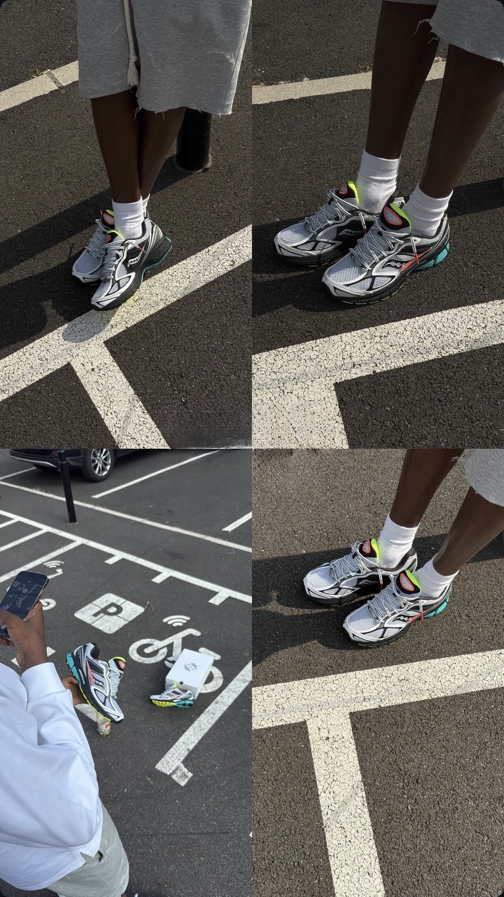
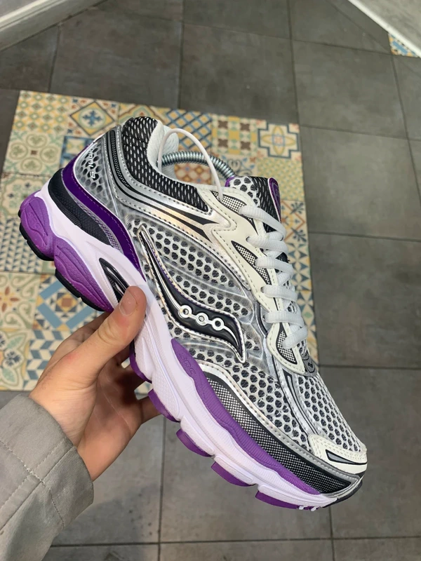
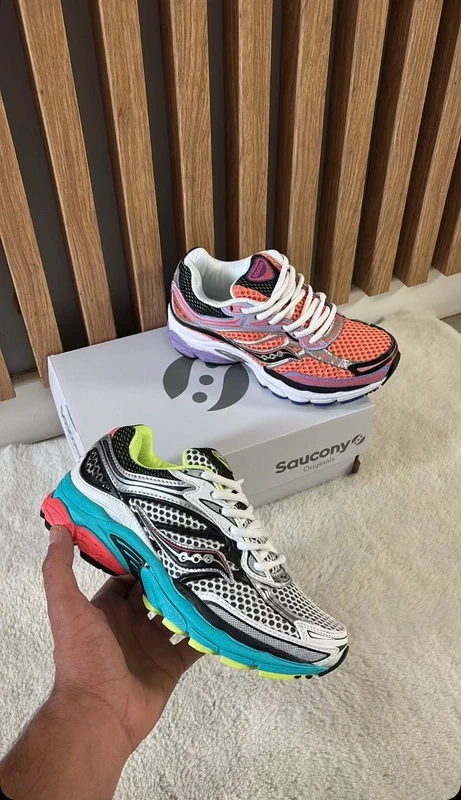
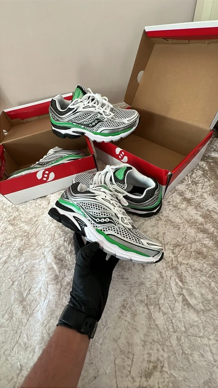
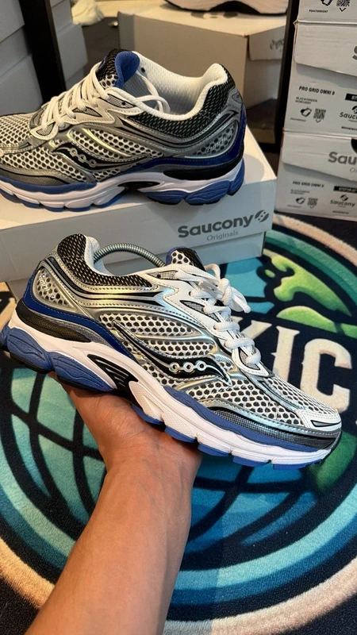
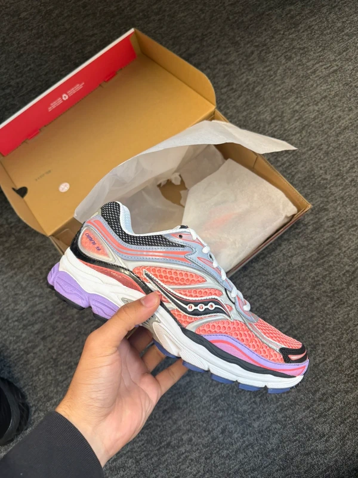
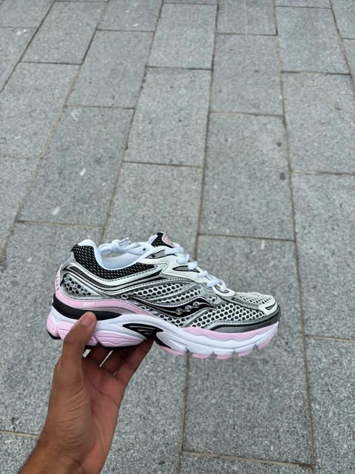

Saucony Omni 9
99,99 €
Découvrez la Saucony Omni 9, une sneaker alliant confort et style. Parfaite pour vos sorties urbaines comme pour vos looks streetwear.
Avis des clients
⭐️⭐️⭐️⭐️⭐️
Un confort exceptionnel ! Je cours environ 30 km par semaine et ces Omni 9 sont un vrai bonheur. L’amorti est moelleux sans être mou, et le maintien du pied est irréprochable.
⭐️⭐️⭐️⭐️⭐️
Très bonne surprise. Je ne connaissais pas la marque avant, mais je suis bluffé. La stabilité et le confort sont excellents, parfaits pour les coureurs pronateurs comme moi.
⭐️⭐️⭐️⭐️⭐️
Stables, légères et confortables. J’ai essayé beaucoup de modèles, mais celles-ci sont clairement parmi les meilleures. On se sent bien maintenu, même sur les longues distances.
⭐️⭐️⭐️⭐️⭐️
Idéales pour les longues sorties. Après plusieurs semaines d’utilisation, rien à redire : confort au top, aucune douleur, très bon amorti.
⭐️⭐️⭐️⭐️⭐️
Très bon maintien pour les pronateurs. Excellent contrôle de la pronation sans gêner la foulée naturelle. Je les porte autant pour courir que pour marcher.
⭐️⭐️⭐️⭐️⭐️
Qualité Saucony au rendez-vous. Chaussures solides, respirantes, avec une semelle qui absorbe super bien les chocs. On sent la différence sur les genoux et les chevilles.